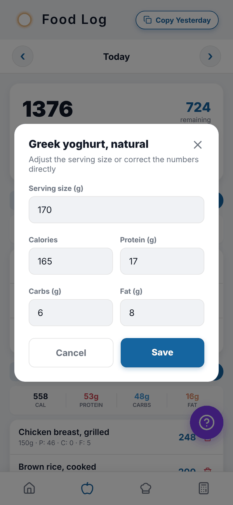
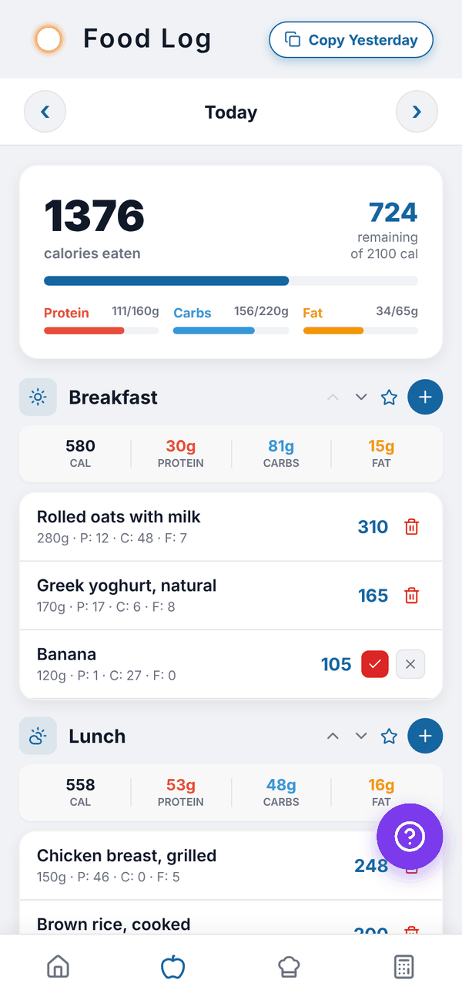

Totality Nutrition guide
Editing, deleting and copying
Change a logged food's amount or numbers, delete an entry, and copy yesterday's food to today.
You can fix anything in your food log. All of this works on Free, Trial and Paid.
Edit a logged food#
- In your food log, tap the food.
- Change the Serving size. Calories, protein, carbs and fat update to match.
- Or type corrected Calories (or Energy (kJ)), Protein (g), Carbs (g) and Fat (g) directly.
- Tap Save, or Cancel to leave it.

Changing the serving also scales fibre, sugar, sodium, saturated fat and vitamins and minerals for that entry.
Delete a food#
- Tap the red bin on the right of the food.
- Tap the red tick to confirm, or the grey x to keep it.

Copy yesterday#
Copy Yesterday at the top of the food log copies everything you logged yesterday into today, in the same meals. It only shows while you're looking at today.
- If today already has food, you're asked whether to Add anyway (on top of what's there) or Cancel.
- If yesterday is empty, you'll see "Nothing to copy".
- When it works you'll see how many entries were copied.
Change a meal's order#
Use the up and down arrows on a meal's header to move it. The order is saved for that day.
Questions#
Can I undo a delete?
No. Add the food again from Add food; it will be in your recent foods.
Can I copy a day other than yesterday?
No. Copy Yesterday only copies yesterday into today. Saved meals are the way to repeat any meal.
Can I move a food to a different meal?
Not directly. Delete it and add it to the other meal. It will be at the top of your recent foods.